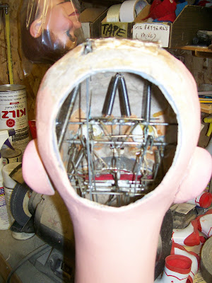

Insull art
7/3/2010
{kind=link}

When I was in high school, our FFA group always made an annual trip to the State Fair. There are a number of experiences that are forever etched in my memory from those trips, but looking inside the head of an Insull figure always brings back one memory from those state fair days. I vividly remember how would stand at the booth of the gold wire artist, watching him deftly twist a strand of gleaming wire into a name or design for his customers. I would try my best to memorize each twist and turn the artist made with his small pliers, turning the wire into an attractive pin for wearing on a sweater or lapel. Then once our group had returned home, I would find a piece of steel wire and try to mimic that craft, with limited success.All the many intricate mechanics inside the head of a figure by Insull are made of skillfully twisted and positioned wires. While not of golden wire, the piece is none-the-less, a true work of art, worthy of a gold award. As with my experience at the fair, I stand in awe at the sight. The difference is - I now know the secret to true artistry is years of repeated jobs, accompanied by their successes and failures, and from that learned perspective, while I still admire such work today, in most cases I am no longer tempted to mimic what I see!